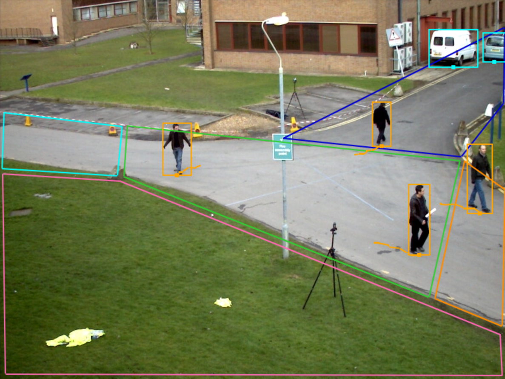
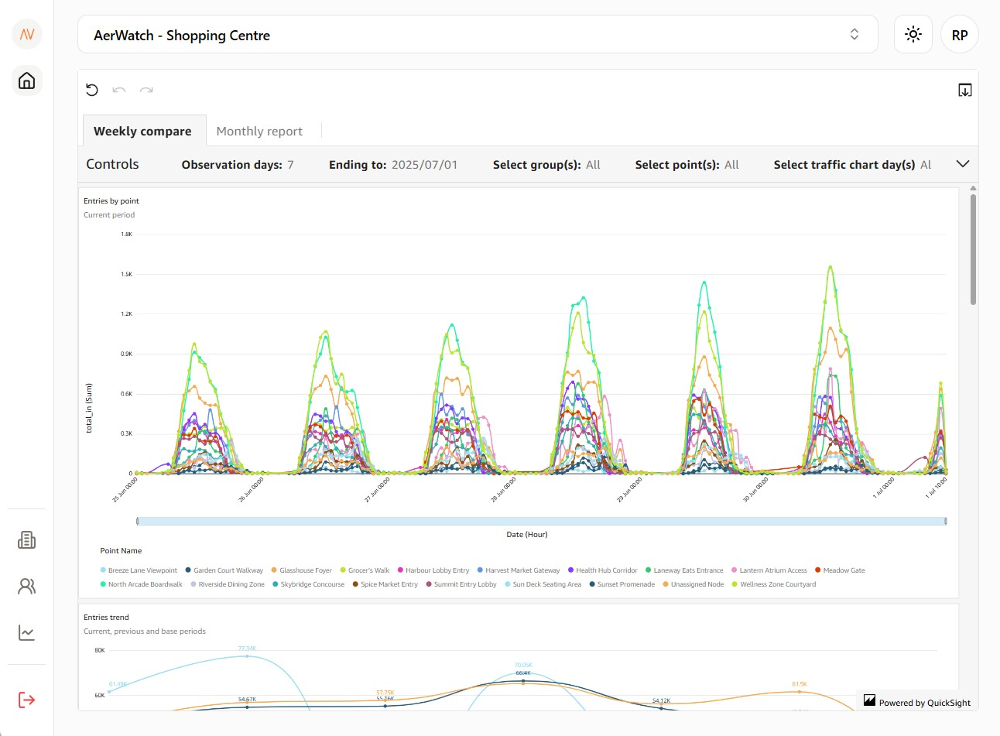

Monitor foot and vehicle traffic with precision using AI-powered object detection and tracking — across malls, airports, campuses, and more.
AerWatch uses advanced object detection and tracking to count people and objects with precision. It performs reliably even in complex environments with heavy foot traffic, occlusions, or overlapping movements. Real-time data ensures you always have an up-to-date view of site activity.

Create multiple virtual zones within a single camera view and assign directional rules to track specific entry and exit flows. AerWatch can distinguish between inbound and outbound movement, helping you understand how people or vehicles navigate through a space. Get accurate counts per zone and per direction, perfect for managing complex layouts like terminals or event venues.

Whether you're using your own BI stack or the AerWatch cloud dashboard, the system adapts to your workflow. You can export raw counts, stream live occupancy data, and trigger smart alerts through one connected platform.